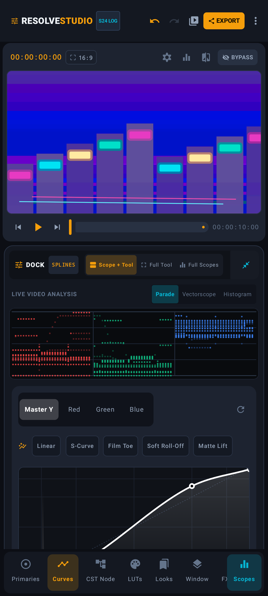
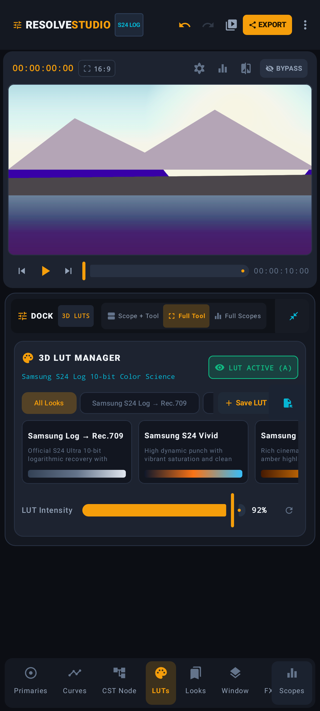

PLATE 01 // WORKSTATION POSTURE
1760 × 1040 PX

Dual-Monitor Landscape Deck
Simultaneous 16:9 viewport, RGB Parade scope, and 4-way wheels.
A zero-compromise OpenGL ES 3.0 grading room engineered for S24 Ultra 10-bit HEVC streams—combining tetrahedral 33³ LUTs, monotonic cubic splines, and real-time parade scopes.


Every screen below is a direct frame capture from the compiled Android application. Select any grading room—or let the studio auto-cycle—to inspect its real-time scope telemetry and Kotlin module.


y = 0.235 · ln(5.555x + 0.092) + 0.540
Exact analytical inverse of the S24 Ultra 10-bit HEVC transfer curve restores scene-referred linear light before CDL grading.
3×3 chromatic adaptation matrix maps wide-gamut Samsung sensor primaries into Rec.709 without out-of-gamut neon clipping.
Cubic Hermite spline above 0.80 IRE smoothly compresses specular highlights to emulate celluloid shoulder density.
Simultaneous 16:9 viewport, RGB Parade scope, and 4-way wheels.
S24 Sunset Portrait with floating RGB Histogram.
S24 Tokyo Cyber Neon in Scope + Tool split view.
S24 Alpine Lake with 92% Fujifilm Classic Neg blend.
S24 Film Noir Studio with elliptical feather ring.
Professional colorists work in pitch-black rooms so nothing biases the eye. We stripped away every decorative gradient and consumer filter—leaving only calibrated scopes, 32-bit floating-point shader math, and your raw 10-bit negative.
1,024 tonal code values per RGB channel decoded via Android `MediaCodec` P010 hardware surfaces.
35,937 lattice nodes interpolated via diagonal tetrahedral decomposition inside `ColorGradingShader.kt`.
Procedural Fujifilm & Kodak print emulations generated at runtime in `FilmEmulationPresets.kt`.
Zero-copy Media3 `Transformer` pipeline encoding graded frames back to 10-bit HEVC or Rec.709 H.264.
Build directly from source with `./gradlew assembleDebug` or inspect the OpenGL ES 3.0 shader pipeline.